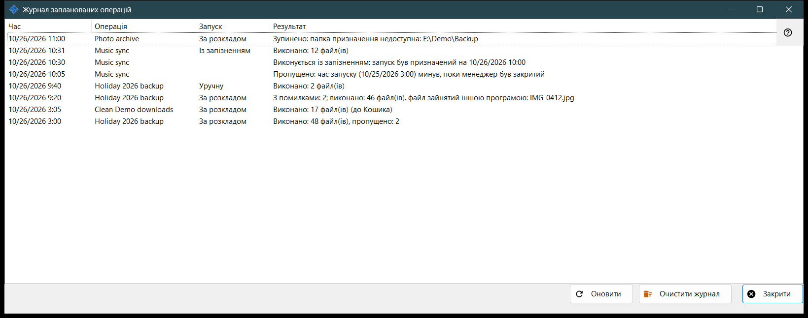
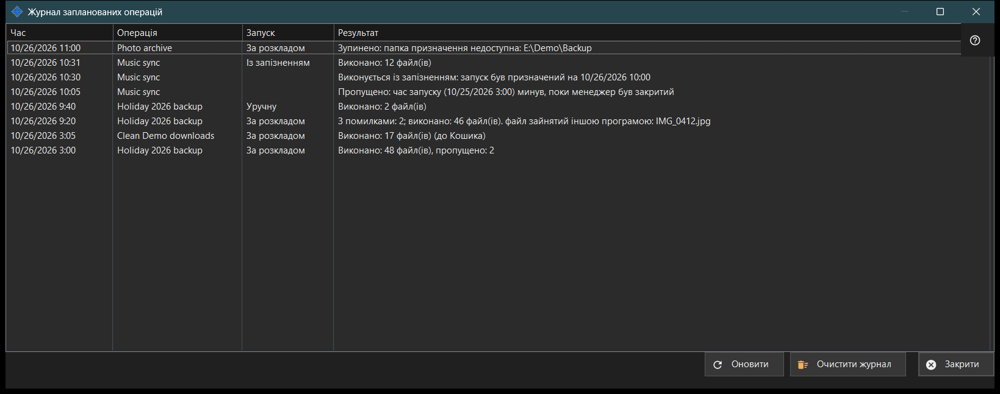

Журнал запланованих операцій
Призначення
Показує останні запуски та нотатки файлових операцій за розкладом так, як вони записані в журналі. Вікно відкривається кнопкою «Журнал..» на сторінці «Файлові операції за розкладом» у налаштуваннях Share Manager.


Порядок дій
- Прочитайте список: Час, Операція, Запуск і Результат.
- Розширте вікно, якщо результат довгий.
- «Оновити» читає журнал знову.
- «Очистити журнал» після підтвердження спорожнює його.
- «Закрити» закриває вікно.
Елементи вікна
Колонки
Час, Операція (її назва), Запуск і Результат. Запуск - За розкладом, Уручну, Запустити всі або Із запізненням; у нотатки він порожній. Вікно читає останні 200 записів журналу під час відкриття та за «Оновити» і саме не оновлюється.
Результати запуску
«Виконано: N файл(ів)», з «, пропущено: M», якщо частину файлів пропущено, і «(до Кошика)» для видалень. «З помилками: N; виконано: M файл(ів)» і перша причина: файл зайнятий, немає доступу, файл не знайдено або він змінився, на диску не вистачило місця. «Зупинено: ..», коли запуск припиняє перешкода: недоступна папка, ресурс без збереженого пароля чи з непідтвердженим ключем сервера, пристрій не в мережі. «Не запущено: ..», якщо визначення відхилено, а також «Пропущено: ..» і «Перервано». Журнал зберігає коди, а не текст помилок, тому формулювання відповідають поточній мові.
Нотатки
Рядок без значення в колонці «Запуск» - нотатка: «Пропущено: час запуску (..) минув, поки менеджер був закритий», «Виконується із запізненням: запуск був призначений на ..», «Відхилено: ця операція вже виконується або чекає черги» та «Відновлено: причину зупинки усунуто».
Очистити журнал
Питає «Очистити журнал запланованих операцій? Самі операції та їхній розклад не зміняться.» з відповіддю «Ні» за замовчуванням. Очищується лише цей журнал; операції та їхні розклади лишаються. Поки журнал порожній, кнопка вимкнена.
Налаштування менеджера · Налаштування спільного доступу SFTP · Налаштування сервера обміну